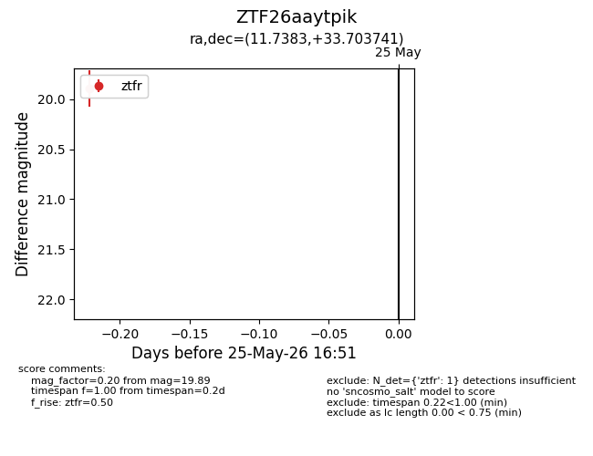
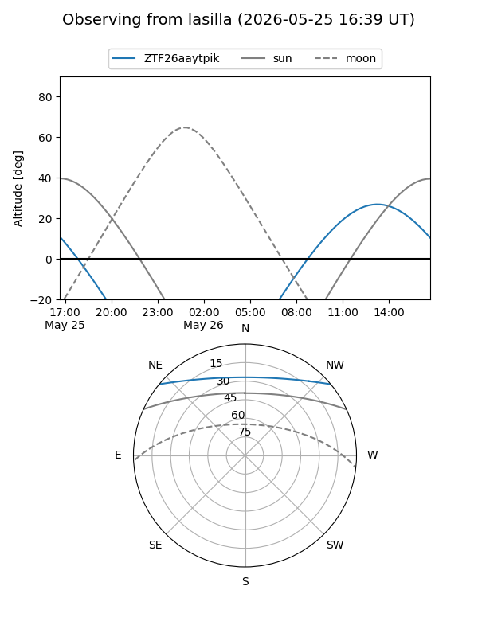
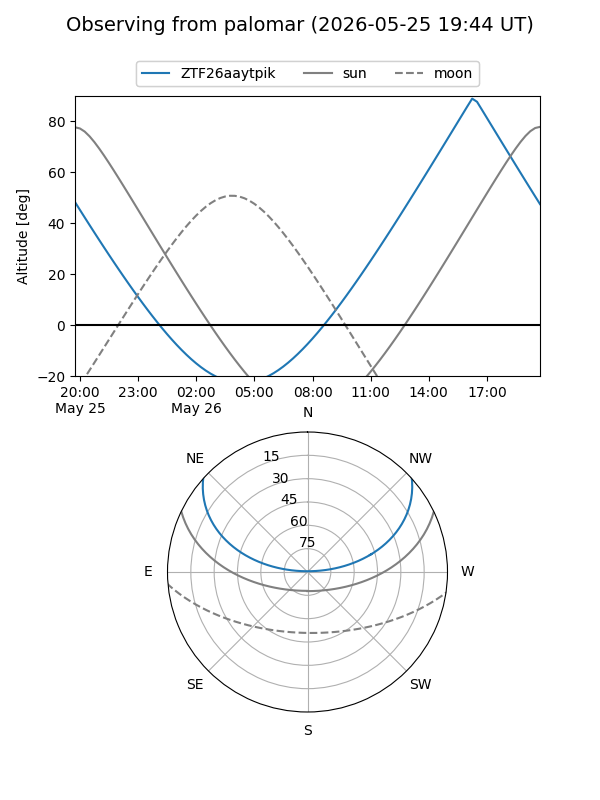

ZTF26aaytpik
Target ZTF26aaytpik at 2026-05-25 16:53
Aliases and brokers:
lsst-FINK: link
lsst-Lasair: link
lsst-ALeRCE: link
ztf-FINK: link
ztf-Lasair: link
ztf-ALeRCE: link
alt names
ZTF26aaytpik (ztf,fink_ztf)
Coordinates:
equatorial (ra, dec) = 11.7383,+33.70374
equatorial (HMS+DMS) = 00:46:57.19,+33:42:13.47
galactic (l, b) = (121.8638,-29.15871)
Flags:
Photometry:
last ztfr=19.89
1 ztfr detections
Lightcurve

Visibility


Additional plots